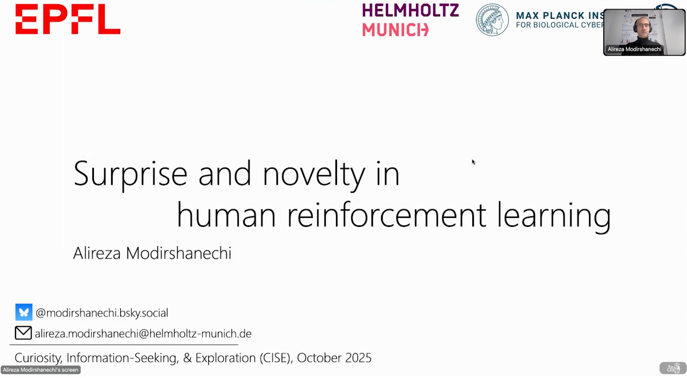
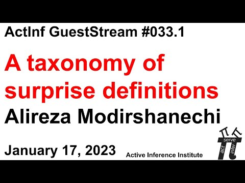
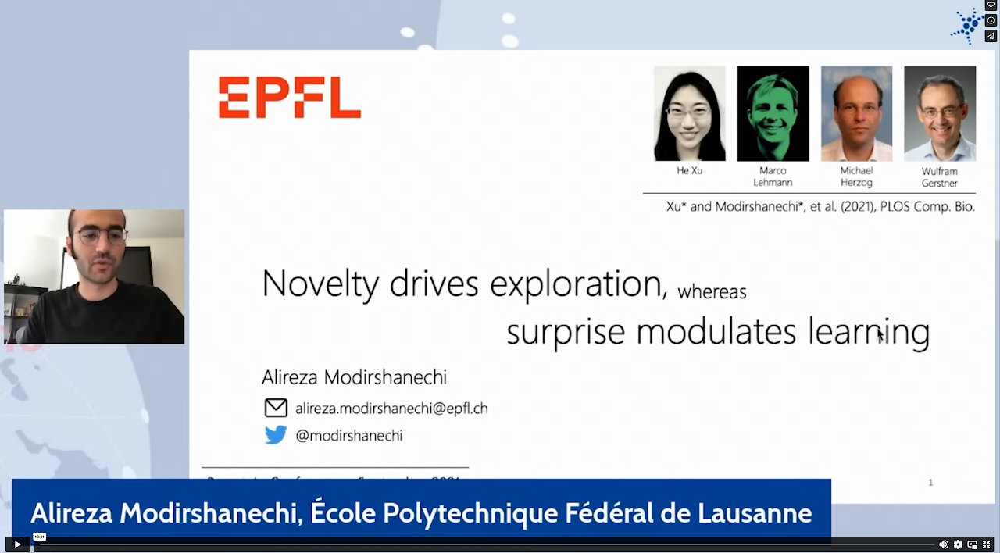
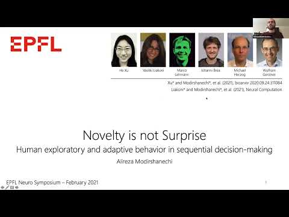

Talks
Research Talks

Surprise and novelty in human reinforcement learning
A taxonomy of surprise definitions
Novelty drives exploration, whereas surprise modulates learning
Novelty is not SurpriseLecture Series: Curiosity-driven Exploration
Recorded for the "Artificial Neural Networks and Reinforcement Learning" course at EPFL.